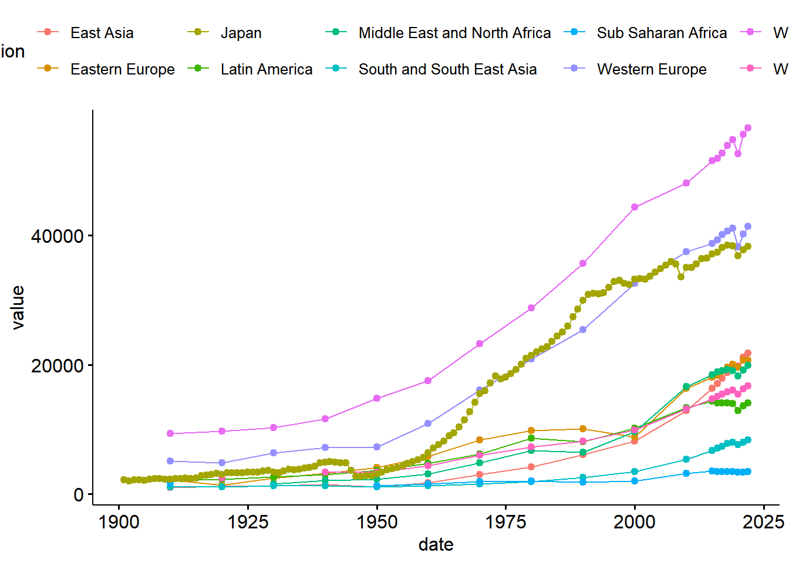

# The dataverse package defaults to Harvard's Dataverse, so it has to be
# pointed at the right server first.
Sys.setenv("DATAVERSE_SERVER" = "dataverse.nl")
# Look up the dataset by its DOI
library(dataverse)
ds <- get_dataset("10.34894/INZBF2")
ds$files[, c("filename", "contentType")]
# Download the specific file by name (confirmed from the listing above)
raw <- get_file("mpd2023_web.xlsx", dataset = "10.34894/INZBF2")
dir.create("../data/raw", showWarnings = FALSE)
dir.create("../data/temp", showWarnings = FALSE)
writeBin(raw, "../data/raw/mpd2023_web.xlsx")Cleaning Raw Data: A Worked Example
Maddison Project Database (GDP per capita, 1-2022)
The goal of this lesson
This is not an R syntax tutorial — it’s a walkthrough of a real cleaning job: turning a messy, human-formatted Excel file into a tidy dataset ready for analysis and plotting.
The general workflow is always the same, whatever the raw data looks like:
- Load the raw file, one sheet/section at a time
- Inspect it — look at the actual structure before assuming anything
- Clean — rename, reshape, and fix inconsistencies
- Handle exceptions — real data always has special cases
- Combine the cleaned pieces
- Sanity-check with a quick plot before trusting the result
- Save the cleaned data so the raw file is never touched again
We’ll follow that exact sequence using the Maddison Project Database (a long-run historical GDP dataset), which has two of the messiest but most common problems in real-world data: data spread across a wide, label-heavy format, and inconsistent structure between sheets.
0. Download the raw data
Before any cleaning can happen, the raw file has to exist locally. The Maddison Project Database is published on DataverseNL with a DOI: 10.34894/INZBF2. Downloading it through R (rather than clicking a button in a browser) means the script documents exactly where the data came from, and can be re-run from scratch by anyone.
Tip
ds$files is worth printing and looking at before downloading anything — never guess a filename. This is the same “inspect before you act” habit that shows up again in the cleaning steps below.
This chunk is set to eval: false since the file only needs to be downloaded once. Run it manually the first time, then leave it off for every subsequent render.
library(readxl)
library(data.table)
mdp <- "../data/raw/mpd2023_web.xlsx"
Note
Keep raw files in a data/raw/ folder and cleaned output in data/temp. Never overwrite the raw file — if a cleaning step turns out to be wrong, you want to be able to start over from the original.
1. Load the raw data
The Maddison file has multiple sheets. We start with the “Regional data” sheet, which reports GDP per capita and population by world region.
mdp_region <- read_xlsx(mdp,
sheet = "Regional data",
skip = 1)New names:
• `` -> `...1`
• `East Asia` -> `East Asia...2`
• `Eastern Europe` -> `Eastern Europe...3`
• `Latin America` -> `Latin America...4`
• `Middle East and North Africa` -> `Middle East and North Africa...5`
• `South and South East Asia` -> `South and South East Asia...6`
• `Western Europe` -> `Western Europe...8`
• `Western Offshoots` -> `Western Offshoots...9`
• `` -> `...10`
• `` -> `...11`
• `East Asia` -> `East Asia...12`
• `Eastern Europe` -> `Eastern Europe...13`
• `Latin America` -> `Latin America...14`
• `Middle East and North Africa` -> `Middle East and North Africa...15`
• `South and South East Asia` -> `South and South East Asia...16`
• `Western Europe` -> `Western Europe...18`
• `Western Offshoots` -> `Western Offshoots...19`setDT(mdp_region)Note skip = 1 — the first row of the sheet is a title/header banner, not column names. You only know this by opening the file and looking at it first. This is a general rule: never write cleaning code before you’ve visually inspected the raw file yourself.
2. Inspect before cleaning
str(mdp_region)Classes 'data.table' and 'data.frame': 28 obs. of 20 variables:
$ ...1 : num 1820 1830 1840 1850 1860 1870 1880 1890 1900 1910 ...
$ East Asia...2 : num 911 846 849 900 NA ...
$ Eastern Europe...3 : num 1045 NA NA 1291 NA ...
$ Latin America...4 : num 957 925 1081 1068 1588 ...
$ Middle East and North Africa...5 : num 886 NA NA NA NA ...
$ South and South East Asia...6 : num 919 935 939 927 889 ...
$ Sub Saharan Africa : num 1188 NA NA NA NA ...
$ Western Europe...8 : num 2171 2315 2528 2670 3029 ...
$ Western Offshoots...9 : num 2513 2887 3168 3474 4214 ...
$ ...10 : num 1128 NA NA 1301 NA ...
$ ...11 : logi NA NA NA NA NA NA ...
$ East Asia...12 : num 427757 NA NA 455774 NA ...
$ Eastern Europe...13 : num 91222 NA NA 118161 NA ...
$ Latin America...14 : num 20704 NA NA 30671 NA ...
$ Middle East and North Africa...15: num 35936 NA NA 42000 NA ...
$ South and South East Asia...16 : num 255695 NA NA 278706 NA ...
$ Sub Saharan SSA : num 60000 NA NA 65000 NA 70000 NA NA 86000 NA ...
$ Western Europe...18 : num 139472 NA NA 172226 NA ...
$ Western Offshoots...19 : num 11231 NA NA 26760 NA ...
$ World Population : num 1042017 NA NA 1189298 NA ...
- attr(*, ".internal.selfref")=<externalptr> This one str() call tells us the two problems we need to fix:
- Column names are junk like
...1,...10,...11— these come from Excel columns that had no header text, or a header that got interpreted as blank - There are duplicate column names (“Sub Saharan Africa” appears twice — once for GDP per capita, once for population), which R silently renamed by appending numbers
Neither of these is visible from the code alone — they only show up once you actually look at the structure of what got loaded.
3. Clean: rename ambiguous columns
setnames(mdp_region, "...1", "date")
setnames(mdp_region, "...10", "World GDPpc")
setnames(mdp_region, "Sub Saharan Africa", "Sub Saharan Africa___1")
setnames(mdp_region, "Sub Saharan SSA", "Sub Saharan Africa___20")
mdp_region[, "...11" := NULL]Each rename here is fixing a specific, identified problem from step 2 — not a guess. The two “Sub Saharan Africa” columns get a ___1 / ___20 suffix as a deliberate marker: it lets us split them back apart programmatically later, rather than fixing each one by hand.
mdp_region[, "...11" := NULL] drops a column that inspection showed was empty/unused — always confirm a column is genuinely unneeded before deleting it, rather than dropping anything that looks odd.
4. Clean: reshape from wide to long
The raw sheet has one column per region — wide format, convenient for a human reading a spreadsheet, but awkward for analysis. melt() converts it to long format: one row per date/region/value combination.
dt <- melt(mdp_region, id.vars = "date")5. Clean: recover structure from column names
This is the key trick in this dataset. The suffix we added in step 3 (___1, ___20) is now sitting inside the variable column, and we can split it back out into real, usable columns:
dt[, variable := gsub("\\.", "_", variable)]
dt[, c("region", "id") := tstrsplit(variable, "___")]
dt[, .N, by = id] id N
<char> <int>
1: 2 28
2: 3 28
3: 4 28
4: 5 28
5: 6 28
6: 1 28
7: 8 28
8: 9 28
9: <NA> 56
10: 12 28
11: 13 28
12: 14 28
13: 15 28
14: 16 28
15: 20 28
16: 18 28
17: 19 28dt[, .N, by = id] here isn’t part of the cleaning — it’s a checkpoint. Printing a count by group after a split is a cheap way to confirm the split worked as expected before moving on.
dt[, id := as.numeric(id)]
dt[, var := ifelse(id < 10, "GDPpc", "Population")]
dt[, .N, by = .(id, var)] id var N
<num> <char> <int>
1: 2 GDPpc 28
2: 3 GDPpc 28
3: 4 GDPpc 28
4: 5 GDPpc 28
5: 6 GDPpc 28
6: 1 GDPpc 28
7: 8 GDPpc 28
8: 9 GDPpc 28
9: NA <NA> 56
10: 12 Population 28
11: 13 Population 28
12: 14 Population 28
13: 15 Population 28
14: 16 Population 28
15: 20 Population 28
16: 18 Population 28
17: 19 Population 28The id numbers turned out to encode which variable a region’s column was (GDP per capita vs. population) — this is domain-specific knowledge you get from reading the file’s documentation or reverse-engineering the pattern, not something obvious from the code.
6. Handle the exception case
Real datasets almost always have one row/column that doesn’t follow the general pattern. Here, the “World” totals don’t have a numeric ID suffix at all — they were named directly (“World GDPpc”, “World Population”), so the general split rule from step 5 doesn’t apply to them:
dt[variable %in% c("World GDPpc", "World Population"),
c("region", "var") := tstrsplit(variable, " ")]
dt[, c("variable", "id") := NULL]
setnames(dt, "var", "variable")
dt[, .N, by = .(variable, region)] variable region N
<char> <char> <int>
1: GDPpc East Asia 28
2: GDPpc Eastern Europe 28
3: GDPpc Latin America 28
4: GDPpc Middle East and North Africa 28
5: GDPpc South and South East Asia 28
6: GDPpc Sub Saharan Africa 28
7: GDPpc Western Europe 28
8: GDPpc Western Offshoots 28
9: GDPpc World 28
10: Population East Asia 28
11: Population Eastern Europe 28
12: Population Latin America 28
13: Population Middle East and North Africa 28
14: Population South and South East Asia 28
15: Population Sub Saharan Africa 28
16: Population Western Europe 28
17: Population Western Offshoots 28
18: Population World 28Notice the pattern: apply the general rule, then explicitly patch the known exception — rather than writing one rule complex enough to cover every case at once. This keeps each step readable and debuggable.
7. Load and clean a second sheet with different structure
Japan isn’t broken out separately in the regional sheet, so we pull it from the “Full data” sheet (which has one row per country-year) instead:
mdp_jpn <- read_xlsx(mdp, sheet = "Full data")
setDT(mdp_jpn)
str(mdp_jpn)Classes 'data.table' and 'data.frame': 131144 obs. of 6 variables:
$ countrycode: chr "AFG" "AFG" "AFG" "AFG" ...
$ country : chr "Afghanistan" "Afghanistan" "Afghanistan" "Afghanistan" ...
$ region : chr "South and South East Asia" "South and South East Asia" "South and South East Asia" "South and South East Asia" ...
$ year : num 1 730 1000 1090 1150 ...
$ gdppc : num NA NA NA NA NA NA NA NA NA NA ...
$ pop : num NA NA NA NA NA NA NA NA NA NA ...
- attr(*, ".internal.selfref")=<externalptr> setnames(mdp_jpn,
c("year", "gdppc", "pop", "country"),
c("date", "GDPpc", "Population", "region"),
skip_absent = TRUE)Renaming to match the column names already used in dt (date, region) is deliberate — it’s what makes the two cleaned pieces combinable in step 8. skip_absent = TRUE means the rename won’t error if a name doesn’t exist, which is a safe default when you’re not 100% sure of every column name in a sheet you didn’t design.
dt2 <- melt(mdp_jpn[countrycode == "JPN"],
id.vars = c("date", "region"),
measure.vars = c("GDPpc", "Population"),
drop = TRUE)Same wide-to-long reshape as step 4, applied to this differently-shaped source, filtered down to just the one country we need.
8. Combine the cleaned pieces
# Real GDP per capita in 2011$
dt3 <- rbindlist(list(dt, dt2), use.names = TRUE, fill = TRUE)use.names = TRUE matches columns by name rather than position (safer whenever two tables were cleaned separately). fill = TRUE allows columns that exist in one piece but not the other — necessary here since dt and dt2 don’t have identical column sets.
The comment above this line matters as much as the code: always leave a note about units/definitions right next to the data, since it won’t be obvious from the column names alone months later.
9. Sanity-check with a plot before saving
ggpubr::ggline(dt3[variable == "GDPpc" & date > 1900],
x = "date", y = "value", color = "region",
numeric.x.axis = TRUE)Warning: Removed 3 rows containing missing values or values outside the scale range
(`geom_line()`).Warning: Removed 7 rows containing missing values or values outside the scale range
(`geom_point()`).
This plot isn’t the final deliverable — it’s a cleaning validation step. If a region’s line looks discontinuous, jumps to an implausible value, or is missing entirely, that’s a sign of a cleaning bug, and it’s far easier to catch here than after the data has already been saved and used elsewhere.
Tip
Keep a commented-out line like this for a second variable you’re not currently checking — it costs nothing and makes it trivial to re-check later:
# ggpubr::ggline(dt3[variable=="Population"&date>1900],
# x="date",y="value",color="region",
# numeric.x.axis = T)10. Save the cleaned data
fwrite(dt3[!is.na(value)], "../data/temp/madison.csv")Two decisions worth calling out:
dt3[!is.na(value)]drops rows with no value at the save step, not earlier — keepingNArows around during cleaning makes it easier to spot where gaps came from, but there’s no reason to ship them in the final file- Saving to
.csvin adata/(notdata.raw/) folder means anything downstream (a graphing script, another student, future-you) never needs to re-open the original Excel file or re-run this cleaning again
11. Build a companion lookup table
Not every useful output has to be the main dataset. Here we also save a small reference table mapping country codes to regions, which other scripts can join against later:
mdp <- read_xlsx(mdp, sheet = "Full data")
setDT(mdp)
regions <- unique(mdp[, .(countrycode, country, region)])
regions[, .N, by = region] region N
<char> <int>
1: South and South East Asia 16
2: Sub Saharan Africa 46
3: Eastern Europe 32
4: Middle East and North Africa 20
5: Latin America 26
6: Western Offshoots 4
7: Western Europe 19
8: East Asia 6regions[grepl("Western Offshoots", region), .N, by = country] country N
<char> <int>
1: Australia 1
2: Canada 1
3: New Zealand 1
4: United States 1fwrite(regions, "../data/temp/madison_regions.csv")The two .N checks here are, again, checkpoints — confirming the region grouping looks sensible (right number of regions, right countries inside a given region) before trusting the lookup table enough to save it.
Summary: the general pattern
| Step | What | Why |
|---|---|---|
| Load | read_xlsx() one sheet at a time |
Different sheets often have different structure |
| Inspect | str() |
Reveals problems (bad names, duplicates) invisible in code alone |
| Rename | setnames() |
Fix ambiguous/duplicate names before reshaping |
| Reshape | melt() |
Wide (human-readable) → long (analysis-ready) |
| Recover structure | tstrsplit() on encoded names |
Turn a naming trick back into real columns |
| Handle exceptions | Targeted dt[condition, ...] fix |
Apply general rule, then patch known special cases |
| Combine | rbindlist(..., fill = TRUE) |
Merge cleaned pieces from different sources |
| Validate | Quick plot or .N by group |
Catch cleaning bugs before they reach saved data |
| Save | fwrite() to a separate data/ folder |
Never re-touch the raw file; downstream work reads the clean version |
This same sequence applies to almost any messy raw dataset — the details of what’s messy change, but the order of operations doesn’t.